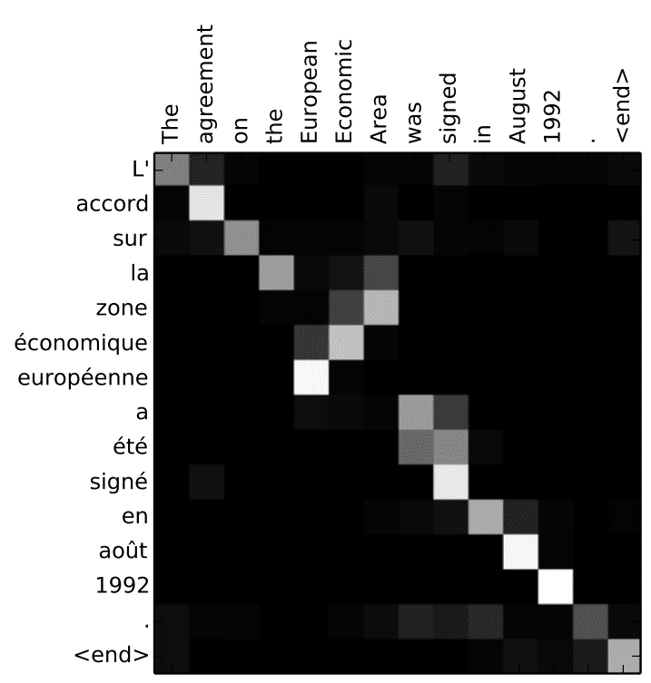
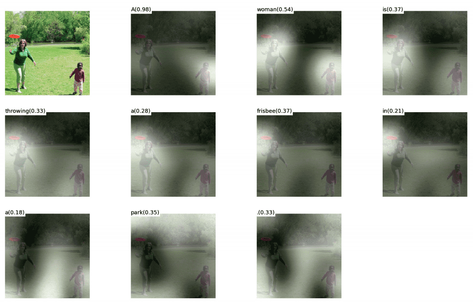
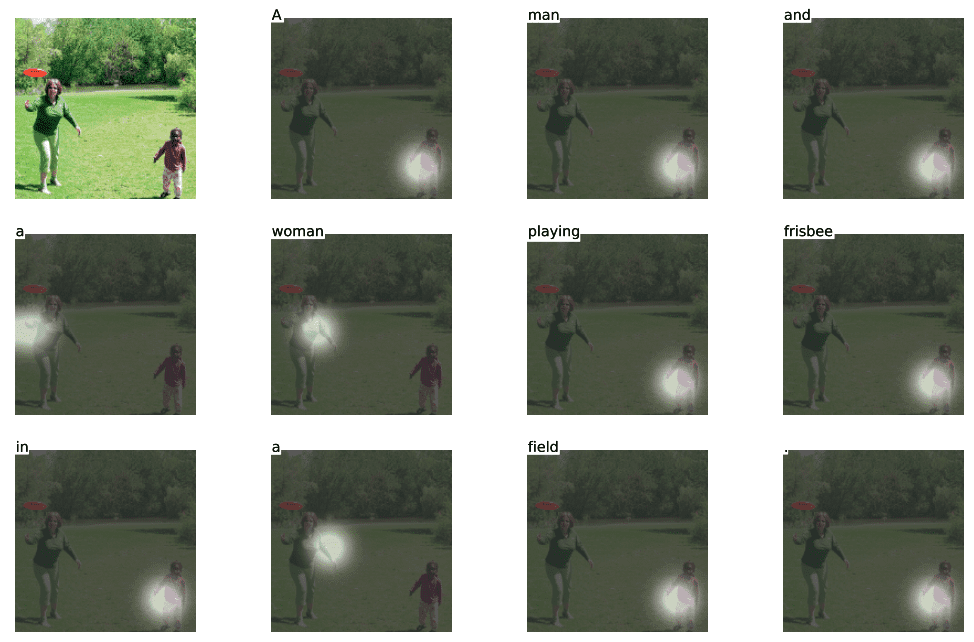
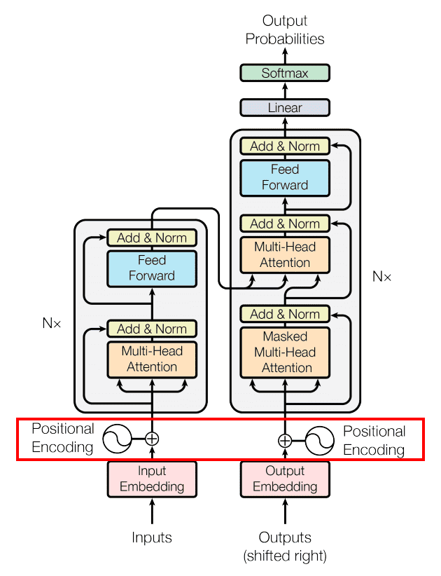
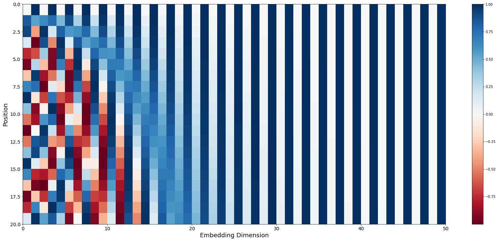
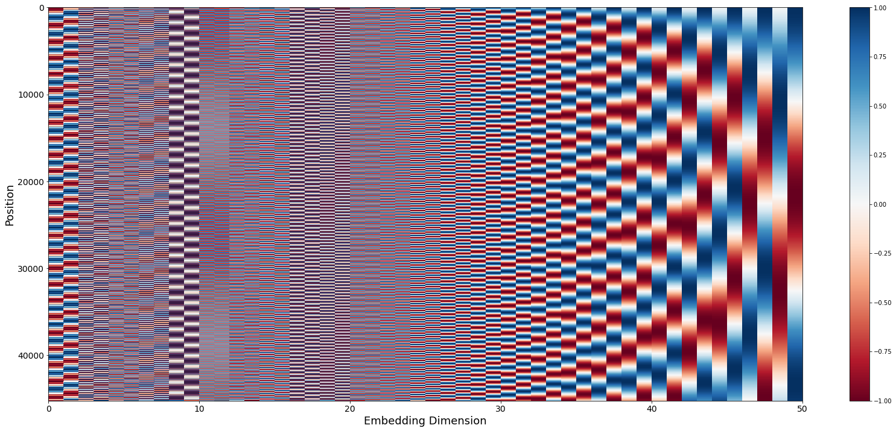
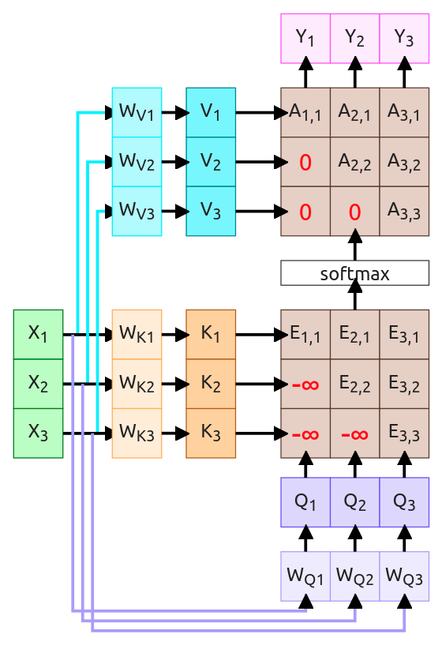
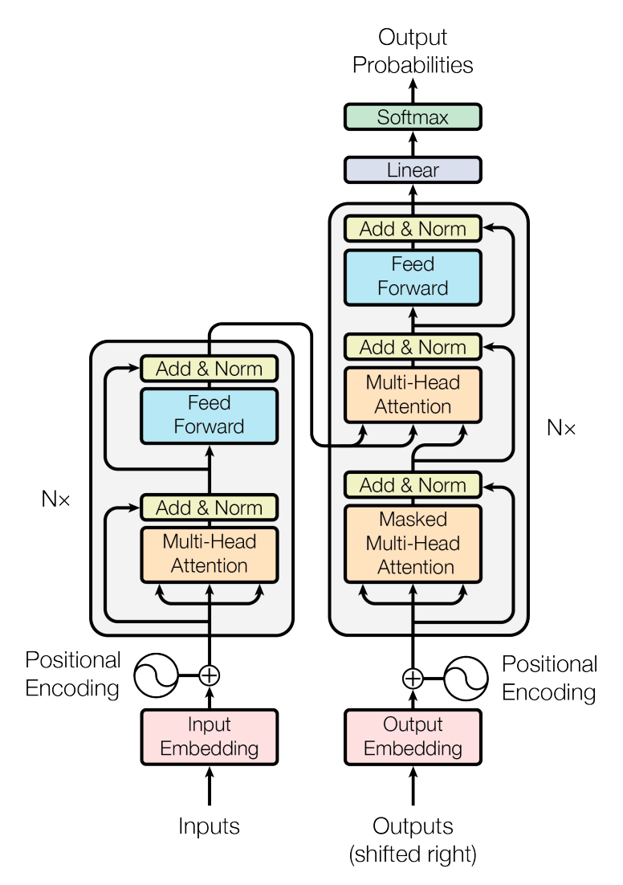
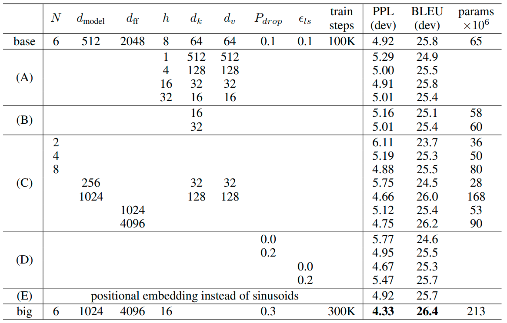

Not so short introduction to Attention and Transformers
By Kemal ErdemAttention weights visualization
Soft attention
Hard attention
Transformer Architecture
Values Visualization
Values Visualization
Masked Attention - "I can't see the future"
Multi-Headed Self-Attention

Architecture Recap
Encoder Block

Encoder-Decoder

First timestep

Deconding while output

The output

Original Transformer
Transformers...
| Model | Layers | Width | Heads | Params | Data | Training |
|---|---|---|---|---|---|---|
| Transformer-Base | 12 | 512 | 8 | 65M | 8xP100 (12h) | |
| Transformer-Large | 12 | 1024 | 16 | 213M | 8xP100 (3.5d) | |
| GPT-2-XL | 48 | 1600 | 25 | 1558M | 40GB | |
| Megatron-LM | 72 | 3072 | 32 | 8300M | 174GB | 512x V100 (9d) |
| GTP-3 175B | 96 | 12888 | 96 | 175000M | 45TB | 355y on V100 |
Bibliography
- Sutskever et al, “Sequence to sequence learning with neural networks”, NeurIPS 2014 https://arxiv.org/abs/1409.3215
- Bahdanau et al, “Neural machine translation by jointly learning to align and translate”, ICLR 2015 https://arxiv.org/abs/1409.0473
- Xu et al, “Show, Attend, and Tell: Neural Image Caption Generation with Visual Attention”, ICML 2015 https://arxiv.org/abs/1502.03044
- Ashish Vaswani et al, “Attention Is All You Need”, NeurIPS 2017 https://arxiv.org/abs/1706.03762
- Jay Alammar, “The Illustrated Transformer”, 2019 http://jalammar.github.io/illustrated-transformer/
- University of Michigan, “Deep Learning for Computer Vision”, 2019 Lectures
- Kemal Erdem, “Introduction to Attention Mechanism”, 2021 https://erdem.pl/2021/05/introduction-to-attention-mechanism
- Kemal Erdem, “Understanding Positional Encoding in Transformers”, 2021 https://erdem.pl/2021/05/understanding-positional-encoding-in-transformers